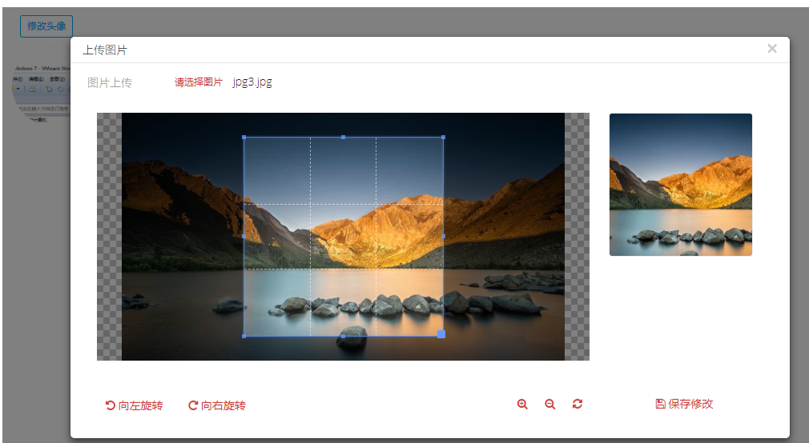

cropper标签
cropper标签的属性 :
cropper标签有如下属性：
其中必填项加上了*号，如下所示 :
*id ： id属性
label：按钮上的文字
size： size为尺寸标签,可以填的数值范围为（1-12）,如size="6",默认size为4
old_url：原图片url，用于回显
*url：上传到后台的url
file_max_size：文件大小限制，单位为M，默认5M
cropper标签的引入方式 :
<@cropper id="demo_cropper" label="修改头像" size="6" old_url=""
url="${base}/demo/tag/cropper" file_max_size="10"/>
传到后台的是Base64字符串，参数固定为：cropperSrc，使用如下：
/**
* 截取图片控件
*
* @param cropperSrc
* @return
*/
@RequestMapping("/cropper")
@ResponseBody
public ResultData cropper(String cropperSrc) {
ResultData resultData = new ResultData(Result_Code.SUCCESS);
log.info("图片Base64：" + cropperSrc);
return resultData;
}
cropper标签显示效果图 :
